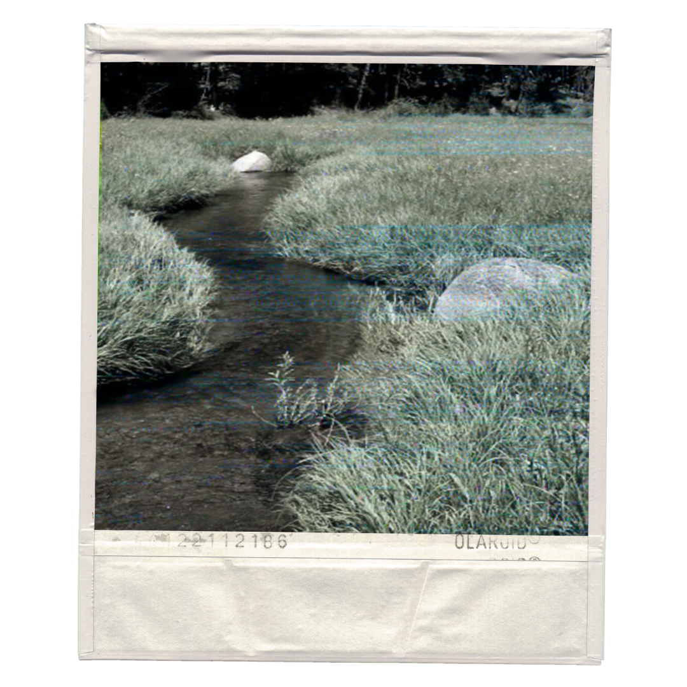

Whereas the nature of SCP-006 does not warrant any extensive containment, a certain level of secrecy is necessary regarding the object's existence and properties, for obvious reasons. The following procedures are required not for personnel safety, but to deny or hide knowledge of SCP-006's effects from the personnel who interact with it.
SCP-006 is a very small spring located 60 km west of Astrakhan. Foundation Command was aware of its existence since the 19th century, but were unable to secure it until 1991 due to political reasons. On the spot of the spring, a chemical factory has been constructed as a disguise, with the majority of laborers under Foundation and/or Russian control. The liquid emitted from the spring has been chemically identified as simple mineral water in 1902, but has the unusual property of "health".
Ingesting the liquid produces the following properties in human beings: the ability to regenerate DNA damaged by sufficient duplication, heightened excitement of cellular duplication, vastly improved abilities in the repair of damaged tissue, and a frightening increase in the effectiveness of the human immune system. Upon testing the liquid on animal subjects, hostile bacteria and viral agents were destroyed immediately. Many reptiles and birds were unaffected, while higher primates experienced the same benefits as humans.
Ongoing research into SCP-006 continues to explore its potential benefits and risks. The Foundation remains committed to understanding its properties and implications.